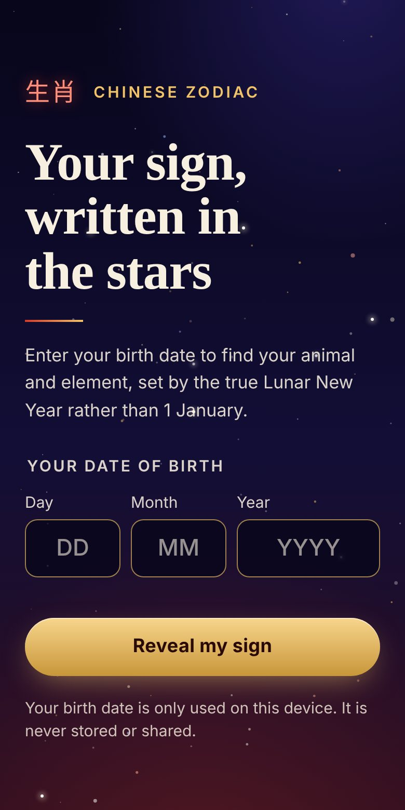
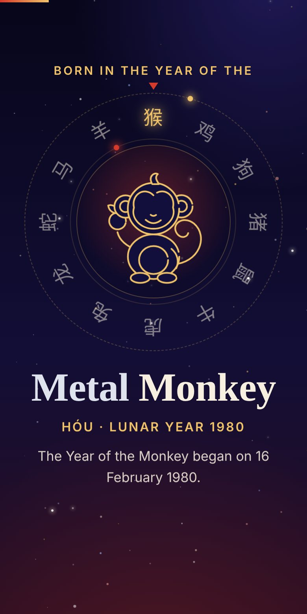
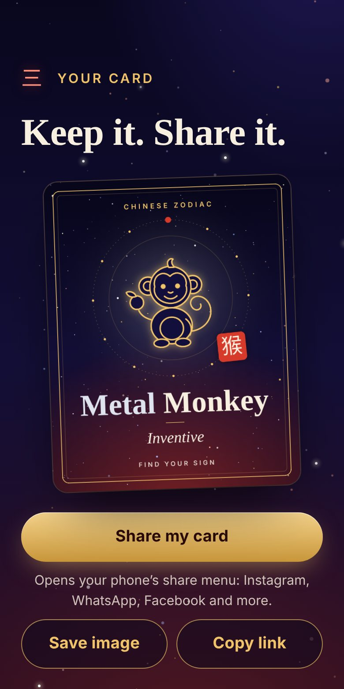
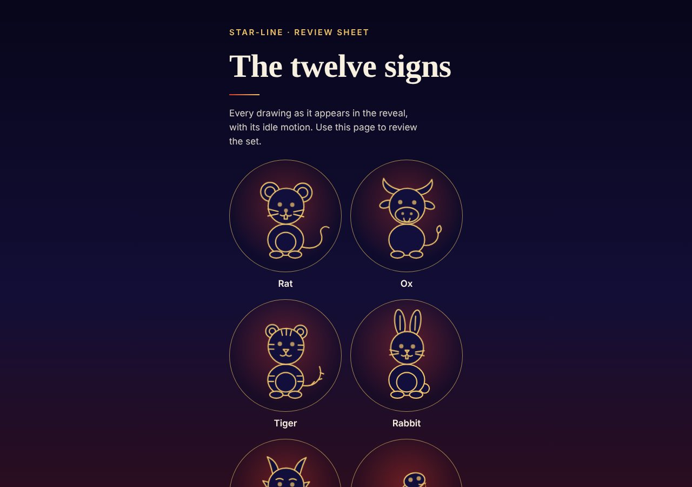
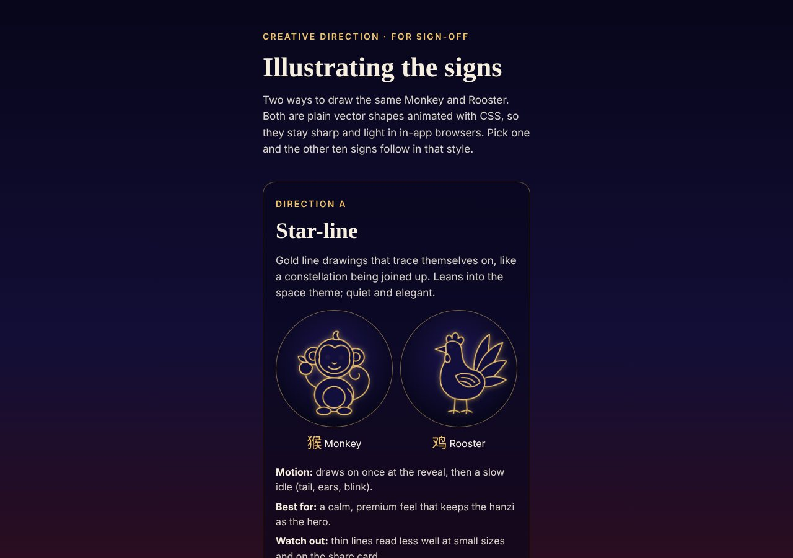

A mobile-first scrolling story. You enter a birth date, and it gives you your Chinese zodiac animal and element based on the real Lunar New Year date for that year. Then you can save a card and check how you match with a friend. It is a working prototype that is not live yet.
My role
I designed the site and directed the build.
What I did myself
The research into whether the idea was viable and what else was in the market, which I did outside Claude. Then the design, the rules for working out a sign, the testing and the decisions below.
What others owned
Nobody else has reviewed the copy or the drawings yet. That is on the list below.
Status
A working prototype that is not live yet. I tested it and iterated on it as I built it. The target is to launch before Lunar New Year on 6 February 2027.
The problem
The Chinese zodiac year begins at Lunar New Year, not on 1 January, and the date moves from year to year. Someone born on 20 January 1948 is a Fire Pig, because the lunar year was still 1947. An Earth Rat would be the wrong answer.
Before I built anything I researched whether the idea was viable and what was already in the market. I did that outside Claude.
This is a mobile-first scrolling story. You enter a birth date and it gives you your animal and element, based on the real Lunar New Year date for that year. You then scroll through a few short chapters, save a card to share, and check how you match with a friend. It is built for the in-app browsers in Instagram and TikTok.
What it looks like
The first screen

The reveal for a birth date in 1980

The card to share

Each animal is drawn as gold lines that trace themselves on, like a constellation being joined up, and then move gently. They are plain vector shapes animated with CSS, so they stay sharp and light in an in-app browser.
The review sheet of all twelve signs

Decisions
Change sign on Lunar New Year
Considered
Changing sign at Lichun, around 4 February, which some traditions do.
Chose
The sign changes on Lunar New Year, using a table of the published dates from 1900 to 2043.
Why
Someone born on 20 January 1948 is a Fire Pig, from lunar year 1947, and not an Earth Rat. The project says which rule it follows.
One share button
Considered
Buttons for Instagram, WhatsApp and Facebook.
Chose
One button that opens the phone's own share menu and passes the card as an image. Where the menu is not available, as in some in-app browsers, the page shows three steps for saving the card and adding it from Photos.
Why
A web page cannot hand an image to those apps directly, so a brand button could only share a link, and the card is the thing people want to share.
Keep the birth date in the browser
Chose
The date is read in the browser, used in memory and discarded when the tab closes. Nothing is stored, there are no cookies or analytics, and the date is never put in the address. The page's security policy blocks scripts from sending data anywhere. The card carries the sign, the element and one trait, and nothing else.
Compatibility for fun
Chose
The match uses the traditional pairings, which are the six harmonies, the four trines, the six clashes and the six harms, and the five-element cycles adjust the score. The page says it is for fun.
Two ways to draw the signs
Considered
Paper-cut, which means flat red and gold shapes after the paper cuttings hung in windows at New Year. The concept sheet recommended it for shareability, because bold shapes hold up on a card and at thumbnail size.
Chose
Star-line, the constellation-style gold line drawings. All twelve signs are drawn in that style.
Why
Paper-cut did not work well once I added characters such as the Rooster and the Monkey, so I switched.
The concept sheet with the two directions for the Monkey and the Rooster

Results
12signs drawn, with a review sheet for the whole set
1901 to 2043the birth years it works for, from a table of published Lunar New Year dates
0dependencies and no build step
17 pxbody text, with nothing smaller than 13 px
Unit tests cover the date table and the sign, element and compatibility logic. I worked out the text colours to meet WCAG AA at 4.5:1 against both the darkest and lightest parts of the background, and most body text meets 7:1. The body font is Atkinson Hyperlegible Next, which was designed so that letters like I, l and 1 stay distinct. Form errors name the field and move focus to it, and the animation stops for anyone who has asked their device for reduced motion. Inputs are 16 px so iOS does not zoom in when you tap one.
There are no visitor numbers because it is not live.
What went wrong
The on-screen keyboard broke the scrolling
Three of the first eight commits fixed problems with the on-screen keyboard on phones. Scrolling went wrong on Android when the keyboard closed, the scroll to the reveal went wrong after the keyboard closed, and the date fields could be hidden under the keyboard. The date fields now stay in view above it.
Four of the first drawings needed redoing
I redrew the horse, the goat, the dog and the pig and simplified the dragon's horns after the first pass. The whole set is still a first pass.
What is left before launch
The drawings need a proper review. The concept sheet itself warns that thin lines read less well at small sizes and on the share card, which is also why it recommended paper-cut.
The copy in the traits, elements and compatibility text needs to be read by someone who knows the tradition. It also needs testing on real phones inside Instagram and TikTok, on iOS and Android, and a screen reader pass on VoiceOver and TalkBack. The contrast figures are calculated and need checking with a measuring tool.
The page makes one request to a third party, which is Google Fonts, and the plan is to self-host the fonts so it makes none. It also needs a preview image, a final address and a place to host it. There is an empty slot for a "this month" chapter that has nothing in it yet.